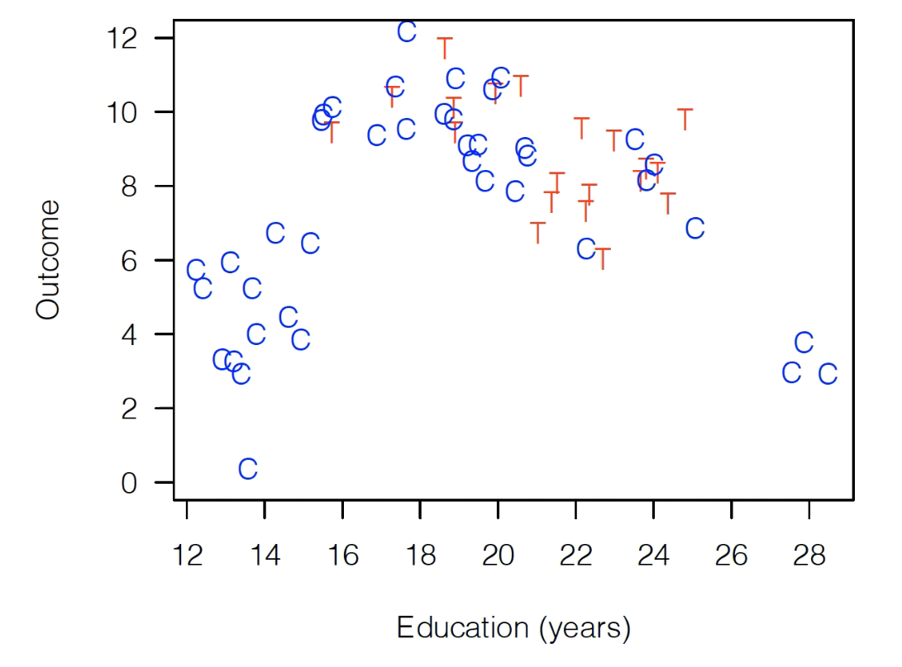
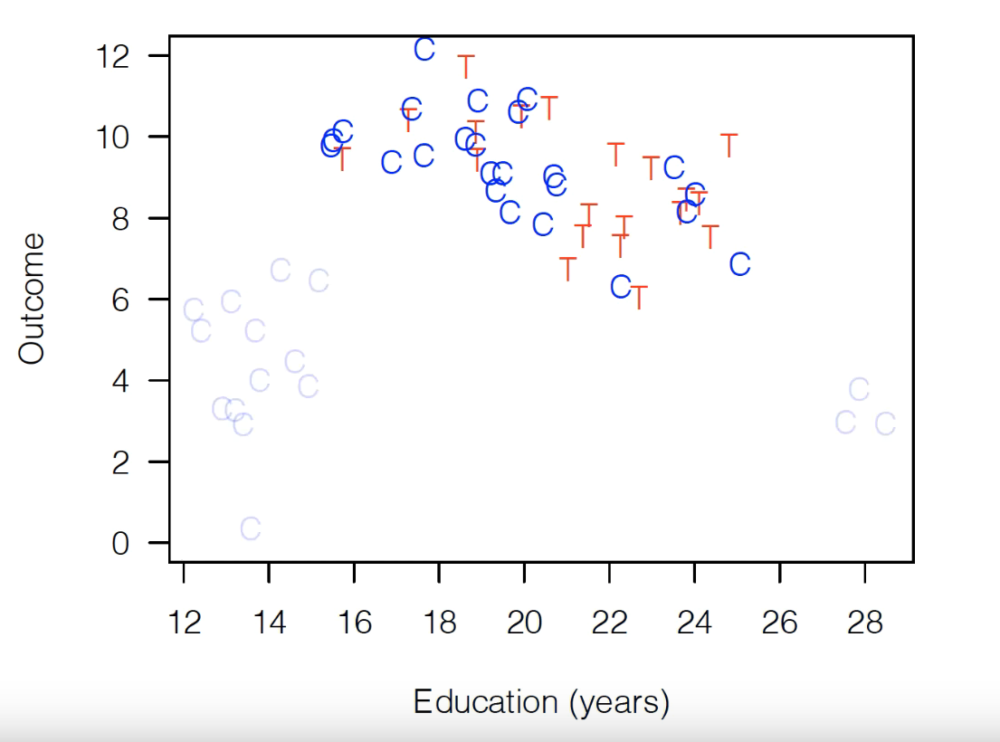

How Matching is Done (A Summary)¶
In this reading, I’ll give a high level summary of how matching works before referring to a youtube lesson a the nitty gritty of a few specific implementations.
Pruning Your Data¶
As noted in our last reading (this reading is a follow-on to The Why of Matching, so if you haven’t read that start there), matching could be more appropriately called “pruning”, as the goal is to winnow down your dataset until you have a set of observations for which your control and treatment variables look very similar in terms of observable characteristics. So how do we do that?
A simple matching algorithm would proceed like this:
Loop over all your treated observations.
For each treated observation, look for the most similar untreated observation (not already in a pair) in terms of your control variables.
If that untreated observation is too dissimilar to the treated observation, throw away the treated observation. (As the user you have to pick a threshold for how dissimilar is ok.)
If not, call them a pair and keep both.
When you’ve finished looping over your treated observations, throw away any unpaired untreated observations.
When you’re done, you’ll have a collected of pairs of observations (one treated, one untreated), where both members of each pair are very similar in terms of their observable control variables. All other data has been thrown away.
To illustrate with the example from the last reading, if we started with this data: 
A simple matching algorithm would probably prune it down to something like this:
Then, and here’s the cool part, you take this dataset and analyze just the way you would otherwise! Just run your regression on this dataset!
Measuring Similarity¶
The biggest decision you have to make when doing matching is deciding how you want to measure whether two observations are “similar”. The most simple, commonly used strategy is to measure the dissimilarity of two observations in a pair by:
For each control variable, calculate the difference between the two observations in the pair (so if one has Education of 20 and one of 14, you’d get 6). Note the example above just has Education, but in reality you likely have dozens of these variables, so you do this for each variable.
Normalize those differences by the standard deviation of the variable (so divide 6 by the standard deviation of Education)
Square all those differences, add them up, and take the square root. That’s your “similarity” score.
Basically, this is like taking the euclidean distance between the points in some really high dimensional space, except you also normalize distances by their standard deviation, a strategy called “Mahalanobis Distance Matching”.
Of course it’s not the only strategy – the video linked at the bottom of this reading will direct you to a talk on three very good strategies, as well as their strengths and weaknesses – but that’s generally the idea.
When Can / Should I Use Matching?¶
Matching is best used in a somewhat odd situation: a place where you have some overlap in what your treated and untreated observations look like (called having “common support”), but where you also have some areas where they don’t overlap (imbalance).
The first is necessary because when you prune your data, the goal is to keep only observations that look similar, so you need some area of overlap, or you won’t have anything to match!
At the same time, however, if there’s no imbalance, then you don’t really need to do matching.
So when should you use it? When your distributions have both areas of overlap and areas of imbalance.
Checking Balance¶
There’s a balance you have to strike when matching: the more strict you are about the maximium dissimilarity you’re willing to include before you throw out a pair of observations, the more balanced your final dataset will be, but the smaller your dataset will be do.
Right? If you reject any pairs that aren’t almost exactly identical, you’ll end up with less data, but what’s left will be more balanced.
So for your application, you have to decide on whether it’s better to have the statistical power of more observations, or the better balance from fewer.
Analyze!¶
Now the best part of matching: now you just do do what you would have done normally.
In other words, you can think of this as a kind of “pre-processing step”, and now you can carry forward by feeding this into a regression just the way you would with the original data.
Specific Models¶
OK, for the details of a few common models, please go watch this great video by Gary King – you can probably start 15 minuntes in, and should watch till at least 45 minutes, though what follows is also really interesting!